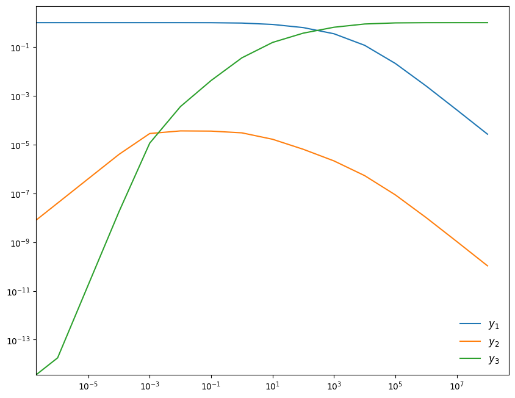

import numpy as np
import matplotlib.pyplot as plt
import matplotlib as mpl
mpl.rcParams['figure.dpi'] = 100
mpl.rcParams['figure.figsize'] = (10, 8)
Implicit Methods and Nonlinear Systems¶
Nonlinear system¶
Consider the following nonlinear system:
The Jacobian is:
(this example comes from the VODE documentation)
We’ll use the intiial conditions
This system has the longterm behavior that:
Although \(y_2\) is initially 0, it will build up quickly and feed the creation of \(y_3\).
Linearization¶
Let’s write our system as:
We will discretize this as:
We will linearize the righthand side. We’ll start with an initial guess for the new-time solution, \({\bf y}_0^{n+1}\), and seek a correction, \(\Delta {\bf y}_0\) such that:
Now we insert this in \({\bf f}\) and Taylor expand:
Our linearized system becomes:
or in terms of the correction:
This is a linear system that we can solve. The basic idea will be:
Apply the correction
Check for convergence: \(\| \Delta {\bf y} \| < \epsilon \| {\bf y}^n \|\)
Iterate, finding the next correction until we converge
Backward Euler Implementation¶
First we need functions for the righthand side and Jacobian
def rhs(t, Y):
""" RHS of the system -- using 0-based indexing """
y1 = Y[0]
y2 = Y[1]
y3 = Y[2]
dy1dt = -0.04*y1 + 1.e4*y2*y3
dy2dt = 0.04*y1 - 1.e4*y2*y3 - 3.e7*y2**2
dy3dt = 3.e7*y2**2
return np.array([dy1dt, dy2dt, dy3dt])
def jac(t, Y):
""" J_{i,j} = df_i/dy_j """
y1 = Y[0]
y2 = Y[1]
y3 = Y[2]
df1dy1 = -0.04
df1dy2 = 1.e4*y3
df1dy3 = 1.e4*y2
df2dy1 = 0.04
df2dy2 = -1.e4*y3 - 6.e7*y2
df2dy3 = -1.e4*y2
df3dy1 = 0.0
df3dy2 = 6.e7*y2
df3dy3 = 0.0
return np.array([ [ df1dy1, df1dy2, df1dy3 ],
[ df2dy1, df2dy2, df2dy3 ],
[ df3dy1, df3dy2, df3dy3 ] ])
Next we’ll write the main driver. This integrates from [t, tmax] using a timestep dt_init. We specify a tolerance for the convergence of the nonlinear system solve for each step.
SMALL = 1.e-100
def backwards_euler(t, tmax, dt_init, y_init, rhs, jac,
tol=1.e-6, max_iter=100):
"""solve the system dy/dt = f(y), where f(y) is provided by the
routine rhs(), and the Jacobian is provided by the routine jac().
t : the current time
tmax : the ending time of integration
dt_init : initial timestep
y_init : the initial conditions
"""
time = t
dt = dt_init
# starting point of integration of each step
y_n = np.zeros_like(y_init)
y_n[:] = y_init[:]
y_new = np.zeros_like(y_init)
while time < tmax:
converged = False
# we want to solve for the updated y. Set an initial guess to
# the current solution.
y_new[:] = y_n[:]
err = 1.e30
niter = 0
neq = len(y_init)
while err > tol and niter < max_iter:
# construct the matrix A = I - dt J
A = np.eye(neq) - dt * jac(time, y_n)
# construct the RHS
b = y_n - y_new + dt * rhs(time, y_new)
# solve the linear system A dy = b
dy = np.linalg.solve(A, b)
# correct our guess
y_new += dy
# check for convergence
err = np.linalg.norm(dy) / np.linalg.norm(y_new) #max(abs(y_new) + SMALL)
niter += 1
if time + dt > tmax:
dt = tmax - time
y_n[:] = y_new[:]
time += dt
return y_n
We’ll follow the example from the VODE documentation and integrate in several chunks. We’ll evolve from \(t = 0\) stopping at \(t = 10^{-6}, 10^{-5}, \ldots 10^8\). Each call to the integrator will begin with the time from the previous integration, and we’ll always set \(\tau\) to have ~10 steps per interval.
y_init = np.array([1.0, 0.0, 0.0])
# like the vode driver, we will do the integration in a bunch of
# pieces, increasing the stopping time by 10x each run
tends = np.logspace(-6, 8, 15)
time = 0.0
y_old = y_init.copy()
ys = []
for y in y_init:
ys.append([y])
ts = [time]
total_be_solves = 0
for tmax in tends:
y_new = backwards_euler(time, tmax, tmax/10, y_old, rhs, jac)
time = tmax
ts.append(time)
for n, y in enumerate(y_new):
ys[n].append(y)
y_old[:] = y_new[:]
Now we can plot the 3 species
fig = plt.figure()
ax = fig.add_subplot(111)
for n, y in enumerate(ys):
ax.plot(ts, y, label=rf"$y_{n+1}$")
ax.legend(frameon=False, fontsize="large")
ax.set_xscale("log")
ax.set_yscale("log")

Comparison of Methods¶
from scipy.integrate import solve_ivp
Now we can try integrating this system using any of the methods built into SciPy https://docs.scipy.org/doc/scipy/reference/generated/scipy.integrate.solve_ivp.html
We are successful if we try BDF, but we fail if we try the RK45 method. This is an emperical demonstration that this problem is stiff.
sol = solve_ivp(rhs, [0, 1.e8], [1, 0, 0], method="BDF", dense_output=True)
print(sol)
message: 'The solver successfully reached the end of the integration interval.'
nfev: 443
njev: 12
nlu: 57
sol: <scipy.integrate._ivp.common.OdeSolution object at 0x7fcb3c2e8050>
status: 0
success: True
t: array([0.00000000e+00, 3.19620663e-05, 6.39241326e-05, 3.83544795e-04,
7.03165458e-04, 1.18036112e-03, 1.65755678e-03, 2.13475244e-03,
2.92511851e-03, 3.71548457e-03, 4.50585063e-03, 5.29621670e-03,
7.22442396e-03, 9.15263122e-03, 1.10808385e-02, 2.44842943e-02,
3.78877502e-02, 8.58830350e-02, 1.33878320e-01, 1.81873605e-01,
4.03737745e-01, 6.25601884e-01, 8.47466024e-01, 1.54569091e+00,
2.24391579e+00, 2.94214068e+00, 3.64036556e+00, 4.38282460e+00,
5.12528363e+00, 5.86774266e+00, 6.61020170e+00, 7.35266073e+00,
9.22149134e+00, 1.10903220e+01, 1.29591526e+01, 1.48279832e+01,
1.66968138e+01, 2.03704749e+01, 2.40441361e+01, 2.77177972e+01,
3.13914583e+01, 3.67662258e+01, 4.21409932e+01, 4.75157607e+01,
5.28905282e+01, 6.35172476e+01, 7.41439669e+01, 8.47706863e+01,
9.53974057e+01, 1.12493202e+02, 1.29588998e+02, 1.46684794e+02,
1.63780590e+02, 1.95903561e+02, 2.28026533e+02, 2.60149505e+02,
2.92272476e+02, 3.47592730e+02, 4.02912984e+02, 4.58233238e+02,
5.13553492e+02, 6.00118609e+02, 6.86683725e+02, 7.73248842e+02,
8.59813958e+02, 1.01619047e+03, 1.17256698e+03, 1.32894349e+03,
1.48532000e+03, 1.73712934e+03, 1.98893867e+03, 2.24074801e+03,
2.49255734e+03, 2.86257828e+03, 3.23259922e+03, 3.60262015e+03,
3.97264109e+03, 4.60070947e+03, 5.22877785e+03, 5.85684623e+03,
6.48491461e+03, 7.43168118e+03, 8.37844775e+03, 9.32521431e+03,
1.02719809e+04, 1.17133870e+04, 1.31547931e+04, 1.45961991e+04,
1.60376052e+04, 1.79878425e+04, 1.99380798e+04, 2.18883171e+04,
2.38385544e+04, 2.69818053e+04, 3.01250563e+04, 3.32683072e+04,
3.64115582e+04, 4.09050245e+04, 4.53984907e+04, 4.98919570e+04,
5.43854233e+04, 6.09766459e+04, 6.75678685e+04, 7.41590910e+04,
8.07503136e+04, 8.93921301e+04, 9.80339466e+04, 1.06675763e+05,
1.15317580e+05, 1.27757265e+05, 1.40196950e+05, 1.52636636e+05,
1.65076321e+05, 1.82492290e+05, 1.99908258e+05, 2.17324227e+05,
2.34740195e+05, 2.61764707e+05, 2.88789220e+05, 3.15813732e+05,
3.42838244e+05, 3.81490269e+05, 4.20142294e+05, 4.58794319e+05,
4.97446344e+05, 5.54117757e+05, 6.10789171e+05, 6.67460584e+05,
7.24131997e+05, 8.07561402e+05, 8.90990807e+05, 9.74420212e+05,
1.05784962e+06, 1.17045954e+06, 1.28306946e+06, 1.39567938e+06,
1.50828930e+06, 1.67496202e+06, 1.84163474e+06, 2.00830746e+06,
2.17498018e+06, 2.44722898e+06, 2.71947778e+06, 2.99172658e+06,
3.26397539e+06, 3.68516301e+06, 4.10635062e+06, 4.52753824e+06,
4.94872586e+06, 5.62623620e+06, 6.30374654e+06, 6.98125688e+06,
7.65876722e+06, 8.67011598e+06, 9.68146474e+06, 1.06928135e+07,
1.17041623e+07, 1.34161918e+07, 1.51282213e+07, 1.68402507e+07,
1.85522802e+07, 2.17532745e+07, 2.49542688e+07, 2.81552631e+07,
3.13562574e+07, 3.76960492e+07, 4.40358410e+07, 5.03756327e+07,
6.12799275e+07, 7.21842222e+07, 8.30885169e+07, 9.39928116e+07,
1.00000000e+08])
t_events: None
y: array([[1.00000000e+00, 9.99998722e-01, 9.99997443e-01, 9.99984658e-01,
9.99971874e-01, 9.99952789e-01, 9.99933706e-01, 9.99914627e-01,
9.99883034e-01, 9.99851451e-01, 9.99819878e-01, 9.99788316e-01,
9.99711357e-01, 9.99634458e-01, 9.99557620e-01, 9.99026100e-01,
9.98497380e-01, 9.96625021e-01, 9.94786617e-01, 9.92981721e-01,
9.85031470e-01, 9.77679557e-01, 9.70848352e-01, 9.52141815e-01,
9.36526997e-01, 9.23065563e-01, 9.11223698e-01, 9.00023715e-01,
8.89981061e-01, 8.80878283e-01, 8.72546465e-01, 8.64858262e-01,
8.47718367e-01, 8.33014703e-01, 8.20161633e-01, 8.08743756e-01,
7.98444470e-01, 7.80761767e-01, 7.65516738e-01, 7.52055023e-01,
7.39998174e-01, 7.24385581e-01, 7.10616978e-01, 6.98272387e-01,
6.87072369e-01, 6.67638073e-01, 6.50852331e-01, 6.36037047e-01,
6.22762067e-01, 6.04001105e-01, 5.87637152e-01, 5.73096315e-01,
5.60013854e-01, 5.38590615e-01, 5.20215428e-01, 5.04096438e-01,
4.89744545e-01, 4.68308970e-01, 4.49941097e-01, 4.33865129e-01,
4.19597281e-01, 4.00165594e-01, 3.83405484e-01, 3.68681751e-01,
3.55579659e-01, 3.35193170e-01, 3.17937742e-01, 3.03005794e-01,
2.89890965e-01, 2.71791240e-01, 2.56468729e-01, 2.43233439e-01,
2.31640760e-01, 2.16976443e-01, 2.04462824e-01, 1.93600317e-01,
1.84052888e-01, 1.70245365e-01, 1.58692180e-01, 1.48822918e-01,
1.40270253e-01, 1.29341217e-01, 1.20185248e-01, 1.12367879e-01,
1.05602859e-01, 9.68969172e-02, 8.96347720e-02, 8.34598379e-02,
7.81364120e-02, 7.20084051e-02, 6.68286878e-02, 6.23818985e-02,
5.85188937e-02, 5.32691328e-02, 4.89238976e-02, 4.52562073e-02,
4.21166610e-02, 3.83493772e-02, 3.52208951e-02, 3.25754273e-02,
3.03080312e-02, 2.75202711e-02, 2.52131771e-02, 2.32680191e-02,
2.16053610e-02, 1.97631468e-02, 1.82151899e-02, 1.68945832e-02,
1.57544657e-02, 1.43652154e-02, 1.32035340e-02, 1.22164299e-02,
1.13674496e-02, 1.03632611e-02, 9.52372766e-03, 8.81039208e-03,
8.19672952e-03, 7.40036784e-03, 6.74588004e-03, 6.19744193e-03,
5.73132941e-03, 5.17644740e-03, 4.71987218e-03, 4.33703062e-03,
4.01150696e-03, 3.61519437e-03, 3.29041879e-03, 3.01891762e-03,
2.78849555e-03, 2.50767725e-03, 2.27833282e-03, 2.08719296e-03,
1.92551688e-03, 1.74361085e-03, 1.59317432e-03, 1.46649462e-03,
1.35838396e-03, 1.22520732e-03, 1.11591967e-03, 1.02443799e-03,
9.46736357e-04, 8.42802807e-04, 7.59439425e-04, 6.90907449e-04,
6.33613303e-04, 5.61860522e-04, 5.04689897e-04, 4.57938958e-04,
4.19039597e-04, 3.68959263e-04, 3.29597728e-04, 2.97714639e-04,
2.71385233e-04, 2.39853379e-04, 2.14860000e-04, 1.94513706e-04,
1.77659925e-04, 1.55084705e-04, 1.37642504e-04, 1.23692297e-04,
1.12277719e-04, 9.59484036e-05, 8.37635442e-05, 7.42330612e-05,
6.65987307e-05, 5.50439651e-05, 4.69592854e-05, 4.10191296e-05,
3.39847074e-05, 2.89711637e-05, 2.51070341e-05, 2.20889284e-05,
2.07497185e-05],
[0.00000000e+00, 1.27716141e-06, 2.55017279e-06, 1.37706537e-05,
2.22915238e-05, 3.05867195e-05, 3.45414639e-05, 3.59724546e-05,
3.61778576e-05, 3.61887679e-05, 3.64211173e-05, 3.65793111e-05,
3.65545356e-05, 3.64755744e-05, 3.64307733e-05, 3.63008048e-05,
3.62313081e-05, 3.59040411e-05, 3.55703686e-05, 3.52442927e-05,
3.38395047e-05, 3.25833883e-05, 3.14533405e-05, 2.85419628e-05,
2.63120776e-05, 2.45331200e-05, 2.30736421e-05, 2.17791259e-05,
2.06890509e-05, 1.97543258e-05, 1.89421616e-05, 1.82268244e-05,
1.67453490e-05, 1.55900039e-05, 1.46598588e-05, 1.38902151e-05,
1.32384933e-05, 1.22065741e-05, 1.13969516e-05, 1.07376796e-05,
1.01873069e-05, 9.52572124e-06, 8.98572303e-06, 8.53317641e-06,
8.14639978e-06, 7.52377305e-06, 7.03183228e-06, 6.62692892e-06,
6.28906200e-06, 5.84163840e-06, 5.48166415e-06, 5.18120075e-06,
4.92577620e-06, 4.53525020e-06, 4.22504977e-06, 3.97026723e-06,
3.75594296e-06, 3.45578711e-06, 3.21554859e-06, 3.01722562e-06,
2.84981124e-06, 2.63382432e-06, 2.45785638e-06, 2.31057164e-06,
2.18489374e-06, 1.99871202e-06, 1.84941634e-06, 1.72599554e-06,
1.62174627e-06, 1.48384063e-06, 1.37210412e-06, 1.27913316e-06,
1.20025770e-06, 1.10373730e-06, 1.02409496e-06, 9.56912557e-07,
8.99304221e-07, 8.18280351e-07, 7.52481256e-07, 6.97655530e-07,
6.51142311e-07, 5.93008184e-07, 5.45393614e-07, 5.05504390e-07,
4.71544686e-07, 4.28558968e-07, 3.93325576e-07, 3.63800538e-07,
3.38660176e-07, 3.10070705e-07, 2.86195158e-07, 2.65903099e-07,
2.48428250e-07, 2.24905592e-07, 2.05629492e-07, 1.89493452e-07,
1.75777589e-07, 1.59436840e-07, 1.45962205e-07, 1.34634519e-07,
1.24973983e-07, 1.13156926e-07, 1.03428562e-07, 9.52615528e-08,
8.83060439e-08, 8.06267885e-08, 7.41960078e-08, 6.87254703e-08,
6.40142310e-08, 5.82884784e-08, 5.35126539e-08, 4.94631080e-08,
4.59865114e-08, 4.18818160e-08, 3.84567277e-08, 3.55509987e-08,
3.30545841e-08, 2.98194959e-08, 2.71645833e-08, 2.49425106e-08,
2.30558867e-08, 2.08122738e-08, 1.89679959e-08, 1.74228289e-08,
1.61099119e-08, 1.45126225e-08, 1.32046138e-08, 1.21118065e-08,
1.11848474e-08, 1.00556445e-08, 9.13391532e-09, 8.36604345e-09,
7.71676103e-09, 6.98650126e-09, 6.38275086e-09, 5.87450758e-09,
5.44085025e-09, 4.90676886e-09, 4.46860541e-09, 4.10190371e-09,
3.79049102e-09, 3.37402120e-09, 3.04003952e-09, 2.76551843e-09,
2.53604142e-09, 2.24869196e-09, 2.01976872e-09, 1.83258676e-09,
1.67685380e-09, 1.47637578e-09, 1.31882105e-09, 1.19120954e-09,
1.08583246e-09, 9.59641738e-10, 8.59623369e-10, 7.78205099e-10,
7.10764896e-10, 6.20434401e-10, 5.50644898e-10, 4.94829663e-10,
4.49160705e-10, 3.83830025e-10, 3.35081956e-10, 2.96954075e-10,
2.66412486e-10, 2.20187795e-10, 1.87845806e-10, 1.64083127e-10,
1.35943429e-10, 1.15888020e-10, 1.00430664e-10, 8.83576846e-11,
8.30005681e-11],
[0.00000000e+00, 1.31985879e-09, 6.78815818e-09, 1.57090841e-06,
5.83417477e-06, 1.66243608e-05, 3.17523997e-05, 4.94008671e-05,
8.07884734e-05, 1.12360374e-04, 1.43700574e-04, 1.75104846e-04,
2.52088224e-04, 3.29065999e-04, 4.05949585e-04, 9.37598804e-04,
1.46638862e-03, 3.33907531e-03, 5.17781292e-03, 6.98303452e-03,
1.49346904e-02, 2.22878598e-02, 2.91201942e-02, 4.78296433e-02,
6.34466910e-02, 7.69099041e-02, 8.87532287e-02, 9.99545064e-02,
1.09998250e-01, 1.19101962e-01, 1.27434593e-01, 1.35123512e-01,
1.52264887e-01, 1.66969707e-01, 1.79823708e-01, 1.91242354e-01,
2.01542291e-01, 2.19226027e-01, 2.34471865e-01, 2.47934239e-01,
2.59991639e-01, 2.75604893e-01, 2.89374037e-01, 3.01719080e-01,
3.12919484e-01, 3.32354403e-01, 3.49140637e-01, 3.63956326e-01,
3.77231644e-01, 3.95993054e-01, 4.12357366e-01, 4.26898504e-01,
4.39981221e-01, 4.61404850e-01, 4.79780347e-01, 4.95899591e-01,
5.10251699e-01, 5.31687575e-01, 5.50055688e-01, 5.66131854e-01,
5.80399869e-01, 5.99831772e-01, 6.16592058e-01, 6.31315938e-01,
6.44418157e-01, 6.64804831e-01, 6.82060409e-01, 6.96992480e-01,
7.10107413e-01, 7.28207277e-01, 7.43529899e-01, 7.56765282e-01,
7.68358039e-01, 7.83022453e-01, 7.95536152e-01, 8.06398727e-01,
8.15946213e-01, 8.29753816e-01, 8.41307067e-01, 8.51176384e-01,
8.59729096e-01, 8.70658190e-01, 8.79814207e-01, 8.87631615e-01,
8.94396669e-01, 9.03102654e-01, 9.10364835e-01, 9.16539798e-01,
9.21863249e-01, 9.27991285e-01, 9.33171026e-01, 9.37617836e-01,
9.41480858e-01, 9.46730642e-01, 9.51075897e-01, 9.54743603e-01,
9.57883163e-01, 9.61650463e-01, 9.64778959e-01, 9.67424438e-01,
9.69691844e-01, 9.72479616e-01, 9.74786719e-01, 9.76731886e-01,
9.78394551e-01, 9.80236773e-01, 9.81784736e-01, 9.83105348e-01,
9.84245470e-01, 9.85634726e-01, 9.86796413e-01, 9.87783521e-01,
9.88632504e-01, 9.89636697e-01, 9.90476234e-01, 9.91189572e-01,
9.91803237e-01, 9.92599602e-01, 9.93254093e-01, 9.93802533e-01,
9.94268648e-01, 9.94823532e-01, 9.95280109e-01, 9.95662952e-01,
9.95988477e-01, 9.96384791e-01, 9.96709568e-01, 9.96981070e-01,
9.97211493e-01, 9.97492313e-01, 9.97721658e-01, 9.97912799e-01,
9.98074475e-01, 9.98256382e-01, 9.98406819e-01, 9.98533500e-01,
9.98641611e-01, 9.98774788e-01, 9.98884076e-01, 9.98975558e-01,
9.99053260e-01, 9.99157194e-01, 9.99240558e-01, 9.99309090e-01,
9.99366384e-01, 9.99438137e-01, 9.99495308e-01, 9.99542059e-01,
9.99580959e-01, 9.99631039e-01, 9.99670401e-01, 9.99702284e-01,
9.99728614e-01, 9.99760146e-01, 9.99785139e-01, 9.99805486e-01,
9.99822339e-01, 9.99844915e-01, 9.99862357e-01, 9.99876307e-01,
9.99887722e-01, 9.99904051e-01, 9.99916236e-01, 9.99925767e-01,
9.99933401e-01, 9.99944956e-01, 9.99953041e-01, 9.99958981e-01,
9.99966015e-01, 9.99971029e-01, 9.99974893e-01, 9.99977911e-01,
9.99979250e-01]])
y_events: None